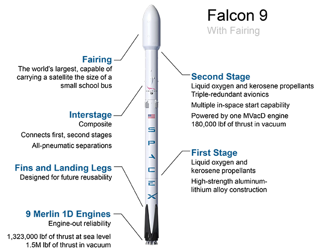

FALCON 9Falcon 9 is a two-stage rocket designed and manufactured by SpaceX for the reliable and safe transport of satellites and the Dragon spacecraft into orbit. Falcon 9 is the first orbital class rocket capable of reflight. SpaceX believes rocket reusability is the key breakthrough needed to reduce the cost of access to space and enable people to live on other planets. Falcon 9 was designed from the ground up for maximum reliability. Falcon 9’s simple two-stage configuration minimizes the number of separation events -- and with nine first-stage engines, it can safely complete its mission even in the event of an engine shutdown. |
Falcon 9 made history in 2012 when it delivered Dragon into the correct orbit for rendezvous with the International Space Station, making SpaceX the first commercial company ever to visit the station. Since then Falcon 9 has made numerous trips to space, delivering satellites to orbit as well as delivering and returning cargo from the space station for NASA. Falcon 9, along with the Dragon spacecraft, was designed from the outset to deliver humans into space and under an agreement with NASA, SpaceX is actively working toward this goal. |
 |
PAYLOADFalcon 9 delivers payloads to space aboard the Dragon spacecraft or inside a composite fairing. DRAGON SPACECRAFTDragon carries cargo in the spacecraft’s pressurized capsule and unpressurized trunk, which can also accommodate secondary payloads. In the future, Dragon will carry astronauts in the pressurized capsule as well. COMPOSITE FAIRINGThe payload fairing is for the delivery of satellites to destinations in low Earth orbit (LEO), geosynchronous transfer orbit (GTO) and beyond. INTERSTAGEThe interstage is a composite structure that connects the first and second stages and holds the release and separation system. Falcon 9 uses an all-pneumatic stage separation system for low-shock, highly reliable separation that can be tested on the ground, unlike pyrotechnic systems used on most launch vehicles. FIRST STAGEFalcon 9’s first stage incorporates nine Merlin engines and aluminum-lithium alloy tanks containing liquid oxygen and rocket-grade kerosene (RP-1) propellant. After ignition, a hold-before-release system ensures that all engines are verified for full-thrust performance before the rocket is released for flight. Then, with thrust greater than five 747s at full power, the Merlin engines launch the rocket to space. Unlike airplanes, a rocket's thrust actually increases with altitude; Falcon 9 generates more than 1.7 million pounds of thrust at sea level but gets up to over 1.8 million pounds of thrust in the vacuum of space. The first stage engines are gradually throttled near the end of first-stage flight to limit launch vehicle acceleration as the rocket’s mass decreases with the burning of fuel. ENGINES9 BURN TIME162 sec THRUST AT SEA LEVEL7,607 kN 1,710,000 lbf THRUST IN VACUUM8,227 kN 1,849,500 lbf |
SECOND STAGEThe second stage, powered by a single Merlin vacuum engine, delivers Falcon 9’s payload to the desired orbit. The second stage engine ignites a few seconds after stage separation, and can be restarted multiple times to place multiple payloads into different orbits. For maximum reliability, the second stage has redundant igniter systems. Like the first stage, the second stage is made from a high-strength aluminum-lithium alloy. ENGINES1 BURN TIME397 sec THRUST934 kN 210,000 lbf NINE MERLIN ENGINESWith its nine first-stage Merlin engines clustered together, Falcon 9 can sustain up to two engine shutdowns during flight and still successfully complete its mission. Falcon 9 is the only launch vehicle in its class with this key reliability feature. |
TECHNICAL OVERVIEW |
HEIGHT 70 m 229.6 ft |
MASS 549,054 kg 1,207,920 lb |
PAYLOAD TO LEO 22,800 kg 50,265 lb |
PAYLOAD TO MARS 4,020 kg 8,860lb |
|---|---|---|---|---|
| DIAMETER 3.7m 12 ft |
STAGES 2 |
PAYLOAD TO GTO 8,300 kg 18,300 lb |
||
| FALCON 9 | NEWS | COMPANY | ROCKET ROAD | ||
| FALCON HEAVY | LAUNCH MANIFEST | CAREERS | HAWTHORNE,CALIFORNIA | ||
| DRAGON | GALLERY | ||||
| SHOP |
| FOLLOW SPACEX | YOUTUBE | FLICKER | © 2018 SPACE EXPLORATION TECHNOLOGIES CORP. |